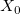
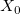
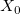

/math-6bfb727b656d02ac43818be9f0eb9951.png "n \times m") , and response variables by Y with size of
, and response variables by Y with size of /math-af98676085fb502b67ab7824d5d311ab.png "n \times r") . Subtract the mean from each column in matrices X and Y, and let them be  and
. Subtract the mean from each column in matrices X and Y, and let them be  and /math-85e22683116ee1466ea1a9ec5036fc20.png "Y_0") .
.
Contents |
Partial Least Squares is used to construct a model where there is a large number of correlated predictor variables or when the number of predictor variables exceeds the number of observations. In these cases, use of multiple linear regression techniques often fails to produce a predictive model, due to over-fitting. Partial least squares finds a use in modeling industrial processes and for such things as calibrating and predicting component amounts in spectral analysis.
Partial least squares extracts factors by linear combinations of predictor variables, and projects predictor variables and response variables onto the extracted factor space.
An observation containing one or more missing values will be excluded from the analysis, i.e. excluded in a listwise way.
Let numbers of observations, predictor variables and response variables be n, m and r respectively. Predictor variables are denoted by the matrix X with size of , and response variables by Y with size of . Subtract the mean from each column in matrices X and Y, and let them be  and .
Each column in the matrix is divided by the standard deviation.
Origin supports two methods to compute extracted factors: Wold's Iterative and Singular Value Decomposition (SVD).
Use the initial vector u. If r=1, initialize u=Y, otherwise u can be a vector of random values.
/math-b66a5ae450a857691794bb99dcfbfb49.png "w=w/|| w ||")
/math-38f9932f42606abf00f0c4b37a0e8a1c.png "t=X_0w") , and normalize t by
, and normalize t by /math-122282269731d839a51bb2afdea640f9.png "q=q/|| q ||")
After w converges, update
, and normalize t by /math-730e6da5ac16fd9ceefe41c082da1252.png "p=X_0^Tt")
/math-93d56c341b0ca427c9f7726ae13b7422.png "\hat{X}_0=X_0-tp^T")
/math-51e61b0988638a3c901508377b8abf9a.png "\hat{Y}_0=Y_0-tq^T")
and k factors can be constructed. x weights, x scores, y scores, x loadings and y loadings for k factors can be denoted by matrices: W, T, U, P, and Q.
Note that in Origin signs of x scores, y scores, x loadings and y loadings for each factor are normalized by forcing the sum of x weights for each factor to be positive.
w is the normalized first left singular vector of /math-d3b7fcc35bfc8a4c8754ac87eb445dce.png "X_0^TY_0") , and,
, and,
, and normalize t by And k factors can be extracted.
Origin uses "leave-one-out" to find the optimal number of factors. It leaves out one observation each time and uses other observations to construct the model and predict responses for the observation.
PRESS is the predicted residual sum of squares. It can be calculated by:
Note that if variables are scaled, PRESS is the scaled result.
If maximum number of factors is k, then it will calculate PRESS for 0, 1, ... k factors. For 0 factor,
/math-b7d18e5222c06e7b0e22724d6663c1a0.png "\text{PRESS} = \sum_{i=1}^n \sum_{j=1}^r (Y_{ij} - \bar{Y}_{j})^2")
/math-8c45df17a99a3ed466ee1e93bd254c0b.png "\bar{Y}_{j}") is the mean value for jth Y variable.
is the mean value for jth Y variable.Root mean PRESS is the root mean of PRESS. It is defined by:
Origin uses the minimum Root Mean PRESS to find the optimal number of factors in Cross Validation.
Once the model is constructed, responses can be predicted by coefficients of the fitted model. Coefficients are calculated from weights and loadings matrix:
And the predicted responses are calculated as:
/math-863ee5c8217b01dc657f2a57041bf0c4.png "\hat{Y}_0 = C X_{0}")
Note that here variables are centered. If variables are also scaled, responses should be scaled back.
Variance Explained for the lth X variable,
Variance Explained for X variables,
Variance Explained for the lth Y variable,
Variance Explained for Y variables,
VIP (variable influence on projections) explains each predictor variable using the mean variance in responses.
X Residuals,
/math-39aea3e39f856d1056159322814df5be.png "X_r = X_0 - TP^T")
Y Residuals,
/math-9a5df1c150cac2d9932562fb94f2bb68.png "Y_r = Y_0 - TQ^T")
When variables are scaled, residuals should be scaled back.
Distances to X model for the ith observation,
Distances to Y model for the ith observation,
/math-b570af1cb5d8f2d9d602291ffffcda89.png "\text{Dist}_y = \sqrt{ \sum_{j=1}^r Y_{rij}^2 }")
T Square for the ith observation,
/math-485318be3ff60bd28173132ec5f68bac.png "T^2=\sum_{j=1}^k \frac{T_{ij}}{\text{Var}_j}")
where /math-fb263895839a43be9f27e4303d05371b.png "\text{Var}_j") is the variance for X scores of the jth factor.
is the variance for X scores of the jth factor.
/math-f0892d0e56f3583c093037f56a0a205b.png "n(n-1)^2\text{betainv}(0.95,k/2.0,(n-k-1)/2.0)")
where is the variance for X scores or Y scores of the jth factor.